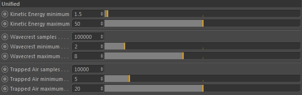

Unified

Unified means that all diffuse particles are generated unified by the same set of settings.
It uses unitless potentials (minimum - maximum) which define the probability of diffuse particles being generated.
This makes it easy to handle because you don't need to worry about explicit values that fit the simulation.
Kinetic Energy minimum
The minimum kinetic energy of the liquid flow required to generate diffuse particles.
Kinetic energy maximum
The maximum kinetic energy of the liquid flow required to generate diffuse particles.
Wavecrest samples
The amount of diffuse particles generated at wave crests.
Wavecrest minimum
The minimum wavecrest potential.
Wavecrest maximum
The maximum wavecrest potential.
Trapped Air samples
The amount of diffuse particles generated in trapped air regions.
Trapped Air minimum
Minimum trapped air potential.
Trapped Air maximum
Maximum trapped air potential.